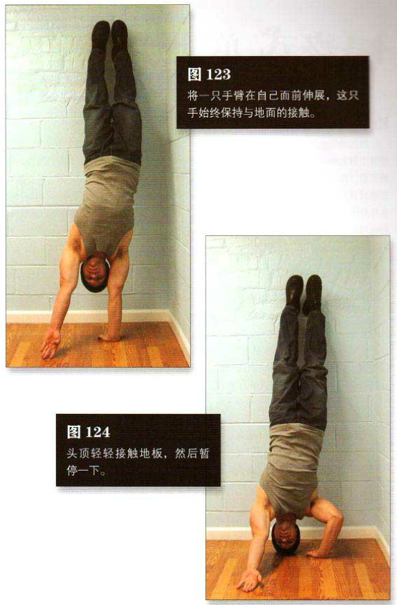

蹬起靠墙成倒立姿势。像平常一样，双手距离与肩同宽，距离墙根约 15 一 25 厘米。只有双脚脚跟与墙壁接触，身体保持自然的弓形。如第八式那样，把身体的大部分重量（约90%）慢慢转移到一只手上。然后翻转另一只手的手掌，使手背贴地，手心向上，手指朝前（视线方向为前）。将这只手臂在自己面前伸展，而这只手始终保持与地面的接触——
部分体重的压力仍然要通过这只手的手指传递。这是该动作的起始姿势（图 123）。手掌向上的那只手臂保持伸展状态，另一只手臂的肘部弯曲，完全在肌肉的控制之中放低身体，不要让身体快速下落，否则会伤到头部，甚至很可能扭伤颈部。头顶轻轻接触地板，然后暂停一下。这是该动作的结束姿势（图 124）。最后，用一只手的手掌及另一只手的手背同时推起身体，回到起始姿势。
初级标准：1 组，3 次
中级标准：2 组，各 4 次
高级标准：2 组，各 6 次